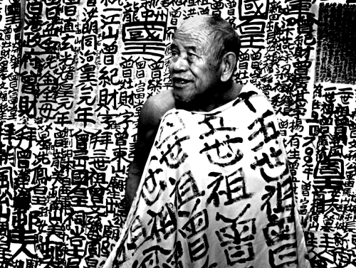

Tsang Tsou Choi, the King of Kowloon

Mr. Tsang Tsou Choi, wearing a blanket with his calligraphy.
| Born | 12 November 1921 |
|---|---|
| Died | 15 July 2007 (aged 85) |
| Occupation | Calligraphy artist |
Tsang Tsou Choi (aka. King of Kowloon), was an artist who wrote Chinese calligraphy throughout the streets of Hong Kong, beginning in 1956.
Convinced of his royal lineage, Tsang adopted the namesake "King of Kowloon" and for nearly 60 years railed against the British and Hong Kong governments who he believed had robbed him of his kingdom.
Click here to know more about his life.